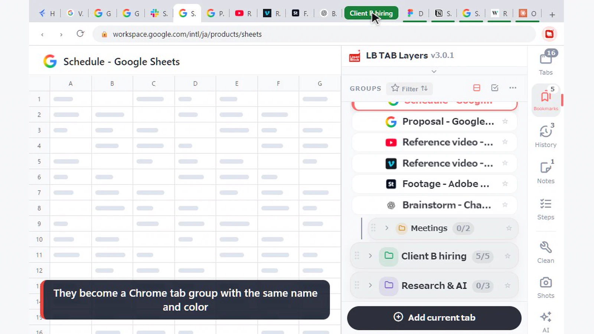
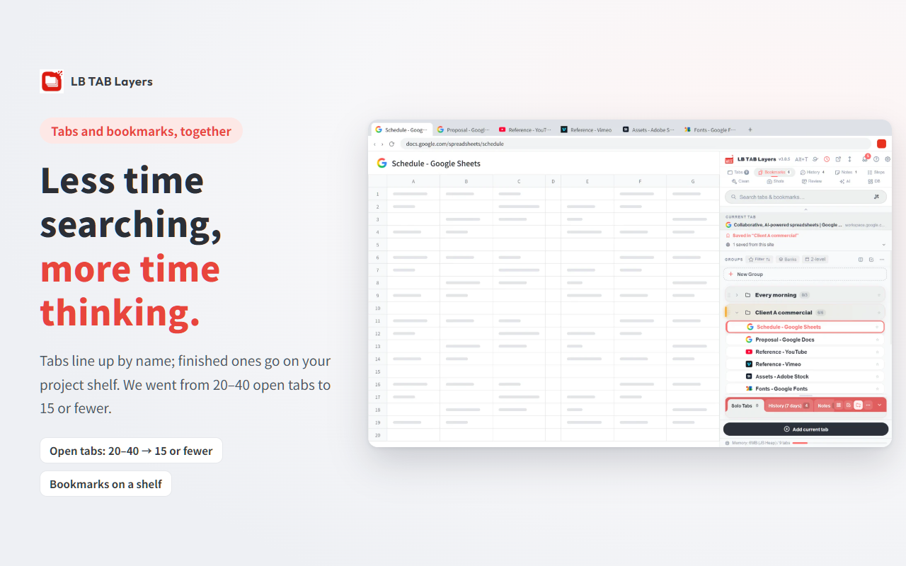

In the LB TAB Layers side panel, click Review → Open a video file from this computer and drag your video in. Press , and . to step one frame back or forward, press C at the frame you want to comment on, type, and press Enter. The video plays only in your browser and is never uploaded. It opens MP4 (H.264), WebM and other formats Chrome can play, but not ProRes.
A cut that hasn’t been released is something you don’t want to put anywhere yet. Uploading it to a sharing service just so you can review it, sending the link around and deleting it afterwards is a lot of steps. So LB TAB Layers has a page where you open the file straight from your computer and write notes on it.
How to open a local video file
- Press Alt+T (Option+T on a Mac) to open the side panel, then click Review.
- Click Open a video file from this computer.
- Drag your video file onto the page that opens, or use Choose file.
The file plays inside your browser only. It is not sent to us or to any other service.
Keyboard shortcuts for frame-by-frame review
| Key | What it does |
|---|---|
| Space (or K) | Play / pause |
| , and . (or ← →) | One frame back / forward |
| Shift + ← → | One second back / forward |
| C (or S) | Pause and write a note → Enter saves it and playback continues |
| D | Pause and draw on the frame on the same page → Ctrl+Enter saves and goes back |
| Esc | Stop writing |
These are the same keys as the revision mode for videos playing in the browser, such as YouTube. Learn them once and they work in both places.
Get to the exact frame, then write
A note like “cut one frame before this text appears” only works if you are on the right frame. Step with , and . until you are there, then press C. The frame rate is measured automatically while the video plays.
The image saved with each note is taken at the video’s original size, not the size it appears on your screen. That makes small text, edges and noise easy to check when you zoom in.
When a spot needs pointing at, press D. You stay on the same page and draw on the paused frame: numbered pins ①②③ with an instruction for each, arrows, rectangles, text, a highlighter, a pen, or pixelate to hide something.
After you write
- The notes are listed on the right in time order. Click one to jump to that moment.
- Click the pencil to edit just the text. Double-click to open the drawing again.
- Move notes you don’t need to the Trash. Right after, Undo brings them back.
- Done at the top right closes this page and takes you back to the tab you were on before.
All the notes go into a revision sheet for that video. From there you can copy them as text, or export them as PDF, PowerPoint, Markdown or CSV. Times can be shown as Time, Frame count or min:sec:frame, whichever the editor works in.
Why we wanted this
We are a video production studio. A first cut fresh out of the edit gets watched in-house before anyone else sees it, and we never liked uploading it to a sharing service just for that. Drag in the file, step frame by frame, and press C and Enter: we wanted notes to feel close to scrubbing in an editing app. In our own studio, revision rounds finished about 3 times faster after we started writing notes this way.
Good to know
- Formats: MP4 (H.264), WebM and other videos Chrome can play. ProRes doesn’t play in Chrome, so export an MP4 for review.
- What is saved: the frame images and your notes. The video file itself is not stored.
- Where: in the browser on this computer (the extension’s storage). Nothing is sent anywhere.
- Plan: revision notes are a PRO feature, and you can use them during the free trial.
New to LB TAB Layers? Start with the quick start, or see every key the extension uses in shortcut keys.
Frequently asked questions
Q. Can I review a video file without uploading it?
Yes. In the side panel, click Review → Open a video file from this computer and drag the file in. It plays only in your browser and is not sent anywhere.
Q. How do I step through a video one frame at a time?
Press the comma key to go back one frame and the period key to go forward one frame. The arrow keys do the same. Shift plus an arrow key moves one second. The frame rate is measured automatically.
Q. Which video formats can I open?
MP4 (H.264), WebM and other formats Chrome can play. ProRes can’t be played in Chrome, so export an MP4 for review.
Q. What size are the saved frame images?
The original size of the video, even if it appears small on your screen.
See it in action



Review the cut before it leaves your computer.
Step frame by frame and write notes on exact frames. Revision notes can be used during the free trial.
Add to Chrome — it's free →